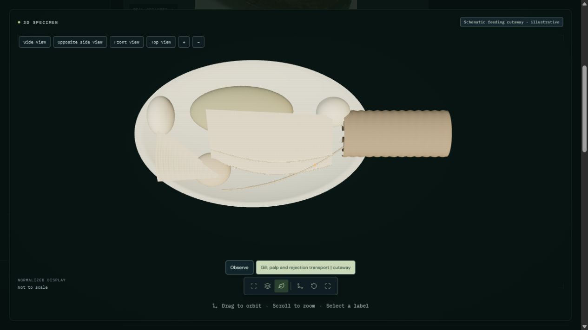
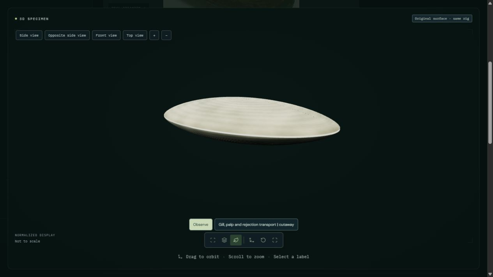

Open soft-shell clam | Oyster study
A 20-second schematic cutaway exposes four folded gill sheets, broad paired labial palps, two adductors and a shared sheath with two siphonal openings. Enlarged markers move from the inhalant side down the gill surfaces, then anteriorly in ventral grooves. Accepted examples cross temporary depressions in palp crests toward the mouth. Rejected examples follow the ventral palp margin and mantle tract toward the inhalant siphon. The near valve and mantle lobe are removed and palp sheets separated for inspection; this is not a natural posture.
Finite gill and palp transport, moving ridge depressions and a pre-ingestive rejection route are illustrated. Microscopic ciliary motion, mucus-cord breakup, apposed-palp grinding, ingestion-volume control, water flow, voidance and digestion are not simulated. Geometry and tissue appearance are schematic; no physiological or photorealistic validation.


Green and amber are prescribed example outcomes, not natural pigmentation or a particle-selection algorithm. Pseudofeces are rejected before ingestion and are distinct from feces. The clock is uncalibrated. The source shell geometry, UVs and materials are retained; the added tissues are authored educational geometry. Software checks establish finite paths, continuous phase changes, reproducible seeking and source preservation, not physiological validity.
50 animal processes remain fully unavailable. Partial studies retain explicit limitations.